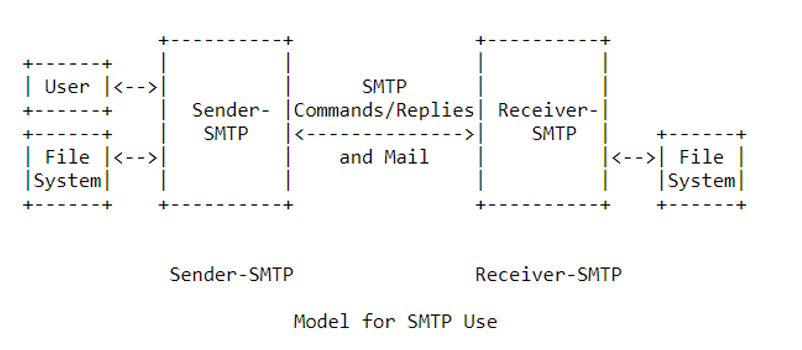
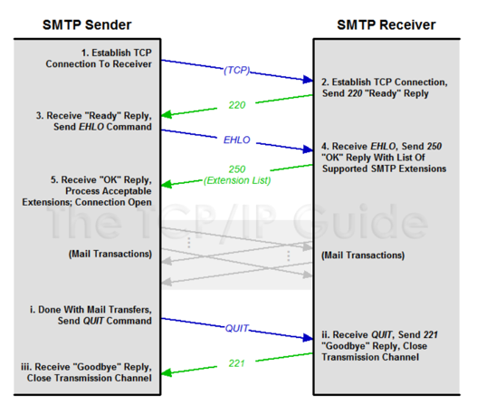

Simple Mail Transfer Protocol
Communication on the Internet
In a pre-internet world, the physical act of sending mail involved quite a few steps and depended on the proper functioning of many interconnected postal and transportation systems. On the receivers’ end, a positive or negative emotional response would depend on the contents of the letter or package. A letter from a friend was a pleasant surprise, but the incessant marketing emails from a credit card company would not necessarily feel as good.
Today those marketing messages still exist, as do the messages from friends. However, the way we send these has changed quite drastically. Although we still do depend on physical mail quite a bit, the reality is that most communication is conducted via email. Many white-collar jobs are essentially just a series of emails sent back and forth! The fact that this form of mail is electronic does not change the fact that there is still a complex infrastructure behind it that enables its smooth operation. Email is just one function of the connected internet that is governed by certain standard communication protocols.
Why Have Standards?
Sending and receiving messages across a network is not a trivial problem to solve. Essentially, a computer can only really send electronic signals either in an analog or digital format. Consequently, the receiver must accept those signals and decipher them and evaluate what the intended message was. As such, it becomes quite important to establish standards so that data is sent in a way such that the intention becomes clear and so that the receiver’s job also becomes a simpler task. In addition to the format of the data to be sent and received, the idea of the sender and the receiver themselves is quite important. That is, how does one node in a network know where to send its data and how does a receiver evaluate where the data it is receiving has come from?
These are two problems that communication protocols are designed to solve for and as such, protocols for all kinds of processes have evolved over time. Today the most common protocol stack that we use is called the Internet Protocol Suite, commonly referred to as TCP/IP. This stack was derived from two foundational protocols, the Transmission Control Protocol and the Internet Protocol (Socolofsky & Kale, Internet Society: RFC, 1991). The TCP/IP model includes protocols that govern all the layers of the internet from the application level all the way down to the physical level. The scope of this paper is not to examine and define all of these levels. What we will be doing is exploring one specific protocol.
SMTP
Simple Mail Transfer Protocol or SMTP is one of the most common standards for sending and receiving emails on the modern internet; however, SMTP is not new and has existed in some form or the other for close to 40 years. A predecessor to what we know as SMTP today was simply MTP or Mail Transfer Protocol (Kozierok, 2005). This early protocol, the MTP, was essentially an amalgamation of two pre-existing protocols; Telnet and FTP. What MTP did was combine these two protocols in what could today be considered a ‘hacky’ way. The result was a protocol that was restricted by its parent protocols. FTP is a general file transfer protocol and as such features that were desired in email would not necessarily transfer over as easily (Kozierok, 2005). SMTP was developed in time to create a new protocol for emails. The ‘S’ in SMTP indicates that this new option is simpler than the ‘hacky’ MTP it is taking over from. What it really means is that this new protocol is built from the ground up to manage emails in a way that MTP really wasn’t and as such, it is more suited for the job.
how does it work
RFC 821 defines the SMTP protocol and proposes this diagram for its implementation:
As per this diagram we see that both, the sender and the receiver, are governed and controlled by SMTP servers. The sender therefore, would send their message the the ‘Sender SMTP Server’. This server then is in charge of handling where to forward this message. In the early days of the internet, before the advent of what we call Domain Name Servers (DNS), there was no way to map which server was managing which IP addresses. At this time SMTP relied on ‘relaying’, which meant that a sequence of SMTP routes was relayed along with the initial message. This routing allowed the message to be ‘relayed’ from one server to another till it reached its destination (Kozierok, 2005). Today with DNS implemented, the sender server can make a DNS lookup request, acquire the receivers IP address, and send the payload directly to the receiver. Once the lookup request resolves, the sender establishes a connection with the receiver and mail transactions can occur once this is completed. Finally the session is terminated. So how does it all work? In this following diagram we see how the servers communicate with one another:

The EHLO and HELO commands are SMTP specific commands that identify the servers to one another. That is, they allow the connection to be established. HELO was the original command and EHLO was created later to allow the addition of new functionalities that were developed for the protocol.
For the above architecture to function correctly, SMTP servers must be left running 24/7 in order to listen for the appropriate TCP messages. This is not necessarily feasible for many end-users which results it the use of other protocols such as POP3 or IMAP to complete the transmission on the clients’ machine. Professional email services set up SMTP servers that their users can use and as such, the cognitive and technical load is not passed down to the user. The user logs in, sends a message, and a receiver will receive that message. In between, all the SMTP work is handled by the provider. So if we use Gmail as an example, once the receivers’ SMTP server receives the email, Gmail retrieves the email via either POP3, IMAP, or a proprietary solution and forwards it to the users’ inbox.
TLDR:
SMTP is used to send emails to an SMTP server, then forward that email from one SMTP server to another, and then receive that email safely. It is up to the user’s client to retrieve the email from the SMTP server, and this is done via POP3 or IMAP in most cases. These days the user has limited to no visibility into any of these steps; however, not so long ago, the user was responsible for setting up their POP3 or IMAP settings in their email client and emails could be synched between the client application and their SMTP server upon logging in.